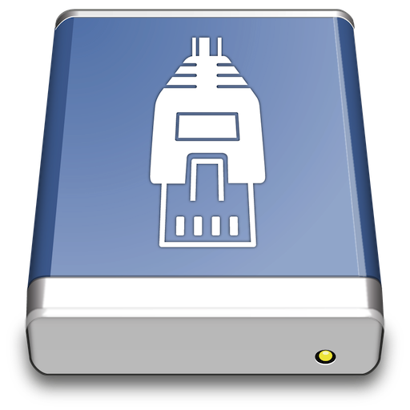
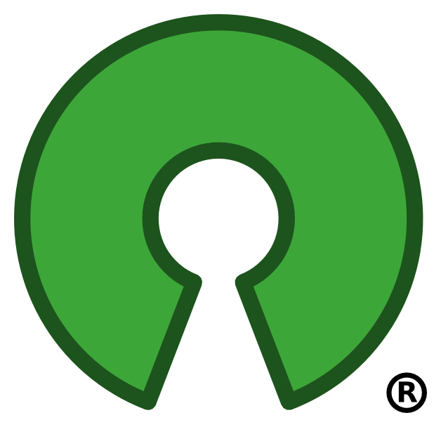

あらゆるサーバに接続。 With an easy to use interface, connect to FTP (File Transfer Protocol), SFTP (SSH Secure File Transfer), WebDAV (Web-based Distributed Authoring and Versioning), Amazon S3, Google Cloud Storage and Rackspace Cloud Files.
Emerging
open cloud
software standards.
Works with thirdparty providers using either the S3 or Openstack Swift APIs.
Fast FTP
Core
A widely
tested FTP (File Transfer Protocol)
implementation for the best interoperability with support for FTP over secured SSL/TLS connections.
クラウドでコンテンツを配布。 ファイルの編集では、あらゆる外部エディタアプリケーションとシームレスに連携。コンテンツを素早く簡単に変更できます。どんなテキストファイルやバイナリファイルも、好みのアプリケーションを使ってサーバ上で編集できます。
クラウドでコンテンツを配布。 コンテンツ配信ネットワーク（CDN）を使用してファイルを配信するために、Amazon CloudFrontやAkamaiを設定するのも簡単。FTP、SFTP、WebDAVであらゆるサーバに接続し、新しいAmazon CloudFront CDNディストリビューションのオリジンとして構成できます。
Amazon
CloudFront
Manage custom origin, basic and streaming CloudFront distributions.
Toggle deployment, define CNAMEs, distribution access logging and set the default index file.
Google
Cloud
Storage
With OAuth or interoperable authentication support. Share files securely with an
authenticated URL. Configure bucket access logging to get statistics with Qloudstat.
Rackspace
Cloud Files
Manage your Rackspace Cloud Files
storage including the configuration of Akamai
content delivery network (CDN) with support to toggle on access logs for Qloudstat.
Amazon S3 for the rest of us. Browse Amazon Simple Storage Service like your harddisk. Supporting the latest and greatest additions to the S3 storage options. Define website endpoints, enable access logging, configure storage class, encryption and lifecycle (Glacier).
バージョニングとMFA
バケットバージョニングと多要素認証削除に対応。バージョニングを有効にすれば、ファイルのあらゆる過去のバージョンに回復可能。
ACL
アクセス制御リスト（ACL）で、きめ細かいアクセス許可を設定。一時アクセスのために署名付きURLをコピーすることもできます。
メタデータ
ファイルの標準HTTPヘッダを編集、またはカスタムHTTPヘッダを追加して、メタデータの格納やキャッシュ有効期限の設定が可能。バッチ編集にも対応。
最上級のブックマーク。 ドラッグドロップでブックマークを管理、フィルタフィールドを使って素早く検索。
ファイル
Drag and drop bookmarks to the Finder.app and drop files onto bookmarks to upload.
Spotlight
ブックマークファイルのためのSpotlightインポーター。
履歴
訪問したサーバの履歴を保存。
Bonjour
Auto discovery of FTP & WebDAV services on the local network.
インポート
サードパーティのアプリケーションから ブックマークをインポート。
簡単に閲覧。 ブラウザ上で素早くファイルを閲覧、移動できます。キャッシュを利用して最高のパフォーマンスを実現。あらゆる文字エンコードに対応し、ウムラウト、日本語、中国語も正しく表示。
Quick
Look
Quick Lookでファイルを素早くプレビュー。スペースキーを押すと、明示的にダウンロードすることなく、Finder.appのようにファイルをプレビューできます。
使いやすく
ブラウザのアウトラインビューで、大量のフォルダ構造も効率良く閲覧。カットペーストまたはドラッグドロップでファイルを整理できます。
Web
URL
Webブラウザ上で対応するHTTP URLを選択し、素早くコピーしたり開いたりできます。
すべてを転送。 同時転送数の制限、正規表現によるファイルの絞り込みができます。中断したダウンロードもアップロードも再開できます。ディレクトリの再帰転送も可能。
ダウンロードとアップロード
ブラウザからブラウザへドラッグドロップするだけで、サーバ間のファイルダウンロードやアップロード、コピーができます。とても簡単です。
 Growl
Growl
Support for Growl and the Notification Center in Mountain Lion.
同期
ローカルディレクトリをリモートディレクトリと同期（その逆も同じ）。操作を実行する前に、影響するファイルをプレビューできます。
 高度なSSH機能。 至れり尽くせり、妥協のないSFTPサーバアクセス。
 認証とセキュリティ
認証とセキュリティ
公開鍵認証、キーボードインタラクティブ（PAM）認証、ワンタイムパスワードに対応。多様な暗号化方式（3DES、Blowfish、Twofish、AES、CAST）と認証アルゴリズムをサポート。任意でSecure
Copy（SCP）を使用したファイル転送も可能。
相互運用性
既存のOpenSSH構成オプションから、ホストエイリアス、公開鍵認証設定、デフォルトログインユーザを含む設定を読み込めます。Terminal.appとの統合により、シェル内の現在の作業ディレクトリを開くことが可能。PuTTY公開鍵も使用できます。
アーカイブ
SSH経由のリモートで、TARおよびZIPファイルを圧縮、展開。
 システムテクノロジーとの統合。
Mac OS XでもWindowsでもネイティブ。
システムテクノロジーとの統合。
Mac OS XでもWindowsでもネイティブ。
キーチェーン
すべてのパスワードはシステムのキーチェーンに格納され、インターネットパスワードはサードパーティアプリケーションでも利用可能。証明書はキーチェーンの信頼設定を使用して認証されます。
Finder
システム全体でFTPとSFTPのデフォルトプロトコルハンドラとしてCyberduckを使用すれば、.inetlocファイルや.duckブックマークファイルをFinderから開けます。
Windows
ネットワーク設定からプロキシ構成を読み込みます。パスワードは暗号化され、アカウントへのアクセスを保護します。
 オープン。 Licensed under the GPL.
Come in. You can follow the daily development activity, have a look at the roadmap and grab the source code on trac.cyberduck.ch. We contribute to other open source projects including OpenStack Swift Client Java Bindings, Rococoa Objective-C Wrapper and Ganymed SSH-2.
インターナショナル。 あなたの言語で使えます。
English, čeština, Nederlands, Suomi, Français, Deutsch, Italiano, 日本語, 한국어, Norsk, Slovenčina, Español, Português (do Brasil), Português (Europeu), 中文 (简体), 正體中文 (繁體), Русский, Svenska, Dansk, Język Polski, Magyar, Bahasa Indonesia, Català, Cymraeg, ภาษาไทย, Türkçe, Ivrit, Latviešu Valoda, Ελληνικά, Cрпски, ქართული ენა, Slovenščina, українська мова, Română & Български език
.